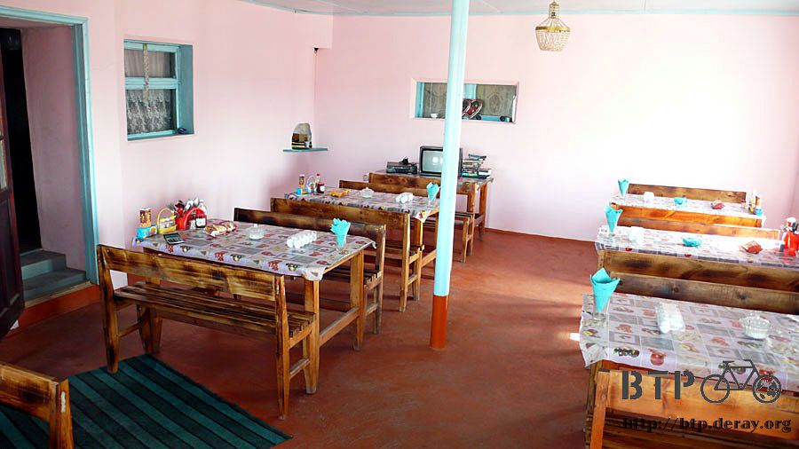

Village Hill
After a delightful shower, I had a good sleep in this comfortable room.
In the morning, I acted as a little child - didn’t want to get out of bed;
I didn’t know when I will have a chance to sleep on a bed again.
Taking this infrequently resource again after got out of the bad, I took a shower one more time.
Next few days I probably won’t have any chance to take any shower.
After packaged my stuff, I saw the restaurant was being opened. The restaurant is opened for breakfast also.
I walked to kitchen directly to see what kind of food I liked that was faster and convenience comparing looked at menu.
There was sound coming from a pan; the chef was frying meat in a pan; the air was filled with delicacies smell.
I pointed to the pan; I wanted to have this, gave it to me, gave it to me.

The owner also cooked 2 eggs and took a big bottle of apple juice from the refrigerator.
I hadn’t this type of food, including breads, for a long time.
Besides ate my owner food, I also looked others food from tables around me.
The noodle soup looks like delicious from the table next to me; I ordered the same soup.
There are potato, noodle, and chicken meat in the soup; the soup is delicate.

I had a full and delectable breakfast. 2 litter of juice could not be finished before I started to bike;
I put left juice on the water bottle holder for later to drink.
It was time to go; no matter this was a homely hotel. There is still a long way to go,
although I didn’t know where my next destination today is.
It is a burning day; today is almost like yesterday. Unfortunately,
wind was blowing this morning and against the wind; it was a hardy morning.

The only different is the scenery; there is a lake on the right side of the road.
Even I was riding along the lake, but the road is not built beside the lake; I could not always see the lake.
Sometimes the lake is so closed and sometimes not. When it is far away, I even didn’t know where the lake is.
If the temperature is too hot, I want to cool down my body by riding into lake.

The water plants are flourishing around the lakeside, just like wetlands.
There are many different bird sounds; it is amazingly there are many different types of insects.
The feces were not normal for past few days. Every time I had collywobbles;
I needed to find a hidden place to take care of it. Probably all foods, I had eaten, were already been eaten by flies;
also the wafer I had drank is strange. My digestion system was still not acclimatized.

There are more houses on the road when closer to the Capital; they are a single house on the wold.
There is a restaurant, gas station, or hotel around every 10 kilometers.
I could take a brake or buy some food when I needed it.
Since there are more stores available, it provides me the calmness of emotion for the rest of the day.
It is a super mini-hotel; it is pity and still early for me to stop today’s journey.

There must be a lot of fishes in the lake; many fish street venders sell smoke fishes on the road.
The vendors use a simple table and a shingle to start their business.
The smoke fishes are big, and the fishy smell is very heavy.
I don’t know who to eat them even if I buy them, but cats must love the fishes very much.

Kazakhstan polices always ask me to stop, but just for talks. After some talks, then let me continue my trip.

Today I had passed through a bigger town; there is a train station. It looks like a prosperous town.
But they are all the same - the small single house; there are many power poles, junk cars, used tires.
The buildings are disappeared.
Before I started the journey this morning, the restaurant owner gave me some bread as snack.
The bread with juice was my lunch at the shadow area of the bus stop.
The clothes I washed yesterday were still not dry yet;
it was a good time to dry them in the sun during the lunch time.
Within intense heat and blowing wind, the clothes were dried quickly.
As long as drivers saw me in the bus stop, they always stopped and to check if I needed a free ride.
Even don’t need to thumb a ride on the road side; cars always stop to provide a free ride.
Here is a good place for hitchhike.
I started to bike right away after the lunch. A while later a car with 3 people asked me to stop the bike.
They originally just wanted to have a short talk with me.
After the short talk and drove away already, they changed their mind and stopped the car again.
They waited for me and liked to have a long talk.
While people are grin from ear to ear, you can see there are many golden teeth;
this country must have a good welfare program for dental.
Government will pay all false tooth cost when people needed and only make golden tooth.
Took out my camera for pictures; when they saw the camera, they were so excited and brought a gun out from the car.
Is it legally to own a gun in Kazakhstan?
I was taking pictures with hand shaking; would like adding the note below at the bottom of the picture.
We have the Dido. If you want it back safely, please bring one million US dollar to get it back.
Although the people live in worn-out houses, the cemetery is better and beauty.
Seeing a gravestone and grave area from time to time, they are magnificent and dignified.
I could see many people were driving cars and playing water at the lakeside when I was close to the lake.
I only dipped my feet in water when I saw there was clear and cool lake or river.
This time I want to find a good place and swim in there; yes, this is my tomorrow’s plan.
Again, there is another lake without any water.
If there is water in this lake, this road would pass through the lake, and the view must be very beautiful and scenic.
The sea level for this highway is not high, but it is in mountain and up/down sloping road.
The sea level for the road is between 200 to 300 meters;
not like in China, the same highway can have 2000 kilometer sea level variance.
Had a break at a gas station; there is a convenient store in the station.
The owner is smiling happily; will see many golden teeth again in mouth if paying a little of attention.
Bought some back up food here; for easy carrying and high calorie, I bought 5 pieces of peanut chocolate bar.
Had the chocolate bars in freezer first, although they will be melted on the road.

Flies are over everywhere, including in gas station.
It was impossible for lunch nap here; how can Kazakh stand so many fries?
Kazakh are unbelievable. Even flies are on their body; they don’t feel flies, just like flies are not existed.
I am the only one dispersing flies.
Besides flying noise from the flies, biting flies make me mad extremely.
If I am a scientist, I must to invent a medicament that can eliminate flies.
Since I could not have the nap, continue bicycling toward today’s destination.
No matter where my destination is today, there are least 100 kilometers to go; it is long.
I felt exhausted. Keep bicycling until I am truly tired.

There were a lot of clouds today; I had more easy biking time under the shadow.
From the picture, you can see it is a nice weather day.
Clouds were all over the sky until the horizontal; it looks like fake scenery.

Around 6PM bought a bottle of coke in a small shop. There is a dog; it didn’t not bark at and chase me, and is well-behaved.
Even though food in the bag was no much left, still gave the dog a hot dog.
While looked at the dog eating the food I gave, I also started to feel hungry.
The shop owner also has a restaurant; it is time for dinner.
There is a case of eggs and some crackers on tables; didn’t know these are for sale or just like seasoning as free.

Today’s chef’s special was deep fry meat cake which is mixture of ground meat and onion.
In order to have a full dinner, it needs bread also, but this only cost me $200.
The milk tea after the dinner comes with meal.
As long as I could stand for flies, it is a good place for organizing the trip log.
The chef is daughter in law (left) in this family. Her name is Natasa and has a child; her husband is in Uzbekistan.
Young brother, Falahata (center), 13 years old, he has both bloods of Uzbekistan and Kazakhstan.
He was always around me and asking me a lot of questions.
Mark (right), 15 years old, looks like not belonging to this family, but living with this family.
He is Russian; no one will restrict him.
Walked around after the meal at the outside of the restaurant, I was looking for a good location for camping tonight.
The flat area under the bridge looks good, although there is much garbage.
Falahata asked where I would sleep tonight; I pointed the flat area under the bridge.
He brought me to their home and showed me the room where they sleep,
told me I could sleep here and didn’t need to sleep outside.
I put Dido at the corner of the restaurant. Every night I slept at different family; I am embarrassing.

After the sunset, restaurant is very busy.
There are many cars in front of the store; Natasa is busying to take care of customers.
I met Falahata at the door; he led me to climbs up the hill after the village.

Stood at the top of the hill, I could see the whole village.
This is a small village; it cannot be found from the map.
You even won’t notice the village while driving by; it looks yet tiny at the afterglow.

All adults, like father and Natasa’s husband and Falahata’s brother, are all in Uzbekistan;
only women, senior citizens, and children are stay in here and take care of business.
Restaurant is even busier after the afterglow;I helped dish wash to reduce their work load.
Didn’t know how to continue the journey if there were no helps from nice Kazakh for past days.
This is an immense gratitude; at this moment, I only could help this family on dish wash.
The place for sleep has a wide bed which is for a number of people.
I was so happy there was a fan; unfortunately, the fan was gone at night.
Natasa and her family live in a RV; Nasata’s family own at least 70% of property in the village.
The family also has 1 horse, 2 cattle, 3 dogs, and 4 cats; no matter when, animals are around you.

Because slept beside the restaurant, there were many flies in the room.
So I slept in my tent in order to insulate from flies.
A few thousand dollars tent is not porous. Although flies could not annoy me, I was all wet in the tent.
My sweat was all over the tent.
Sleeping inside the tent was even hotter than riding bike in the sunny day;
but as long as I leaved the tent, flies were flying toward to me.
Finally I could not endure the hot in the tent and came out; I could not sleep until business was closed at 2AM.
I didn’t get enough sleep; it was hard to sleep and kept turning my body.
Keeping imagination if I sleep under the bridge might be much cooler than here and no flies.
I was determined to be a scientist to invent medicament to eliminate flies.